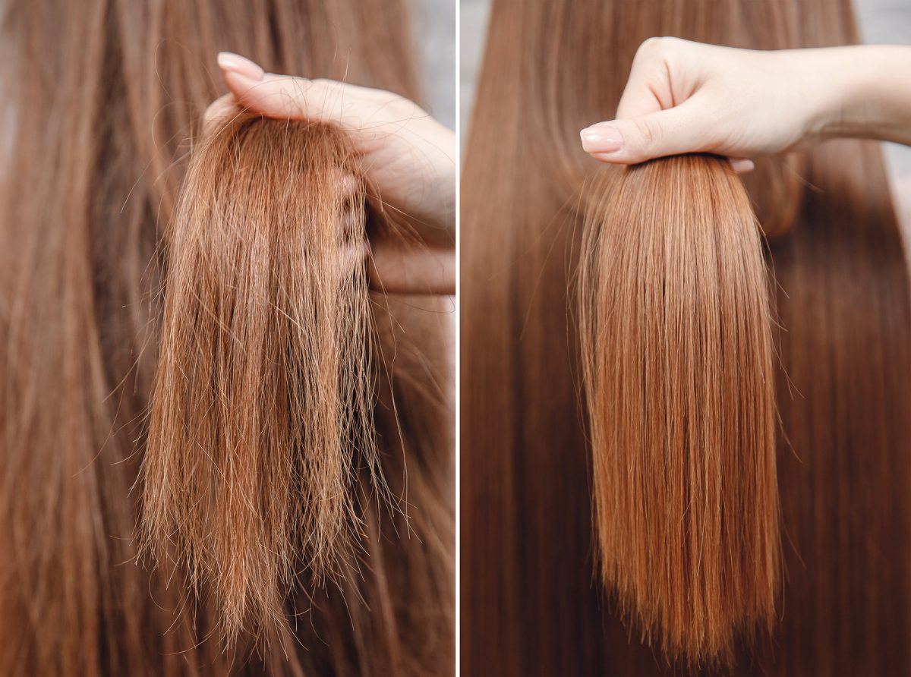

Corte

Todos los estilistas de nuestro salón realizan con el cliente una consulta previa
para conocer mejor su cabello y sus necesidades. Lo asesoran y presentan las opciones del estilo que más le favorece, según su
fisionomía y su tipo de cabello, y siguen técnicas enfocadas a facilitar su mantenimiento en casa.
Como arquitectos del cabello, nuestra misión es alcanzar
la mejor versión
de cada uno de nuestros clientes, respetando y realzando su propia belleza.Coloración
Nuestro servicio de coloración se diferencia porque nos gusta tratar tu pelo y conseguir un
color natural
, para que tu pelo sufra lo menos posible. Para ello usamos coloración natural sin amoníaco con una cobertura del 100% de las canas. Buscamos ofrecerte un color personalizado para que tu pelo se adapte a tu color de piel, y estilo.Y para aquellas que quieran dar un extra de
brillo
a su pelo sin tener que teñirse, el baño de color, es la alternativa perfecta ya que ofrece a tu cabello, un brillo y fuerza, que harán que tengas la mejor melena.Mechas luminosas

Somos especialistas en la
Técnica del Balayage
, que tiene su origen en los años 70. Balayage, significa barrido, la técnica consiste en aplicar las mechas, desde la raíz hasta las puntas. Unas mechas que quedan de lo más bonitas, utilizando la técnica más respetuosa con el cabello.Las
mechas babylights
son la última tendencia de moda en el mundo de la peluquería. Si quieres dar un cambio de color a tu cabello, son una buena forma de hacerlo. Se trata de dar pequeños reflejos de luz por todo el pelo para conseguir un tono más claro y luminoso de una forma muy sutil y natural. Para realizar estas mechas se empieza a dar color en la raíz del pelo y se baja hasta dos tonalidades de tu color natural, resultando unas mechas muy naturales y favorecedoras, sin cambiar el color de tu melena. Con esta técnica de coloración conseguimos una melena tridimensional que aporta volumen y más luminosidad.Tratamientos para el cabello
Ofrecerte los mejores tratamientos para tu cabello para que salgas de nuestro salón
con la sensación de tener un pelo más sano y cuidado, siendo este nuestro principal objetivo. Para ello te ofrecemos las
últimas técnicas en cuanto al cuidado del cabello.
El tratamiento de
ácido hialurónico
hidrata el cabello, rehabilita y es beneficioso para el cuero cabelludo, consiguiendo un mayor volumen, hidratación y grosor del pelo. Este tratamiento es ideal para cabellos frágiles, pues el ácido hialurónico capilar contiene ácido glioxílico, pantenol y colágeno hidrolizado de origen vegetal, aportando sustancia capilar y dejando la estructura compacta.El tratamiento de
keratina progresiva brasileña
se trata de un tratamiento original de Brasil, es un tratamiento que promueve el liso y a su vez una total recuperación capilar. Debido a su alta concentración en aceites, keratina y proteína de seda, devuelve una gran parte de la masa capilar perdida con las agresiones externas o procesos químicos muy agresivos como las mechas, barridos y el uso constante de la plancha. Pero sobre todo es el único tratamiento que no cambia la estructura del pelo, no causa el odioso efecto raíz, elimina el 100% del encrespamiento, reestructura el pelo dejándolo suave y con brillo, y además frena la rotura con una duración de entre 3 y 6 meses.El
botox capilar
es una de las técnicas que más se usa para cuidar el cabello, hidratar profundamente y dar brillo. El botox aporta vitaminas al cabello, lo hidrata y hace que se rompa menos, logrando que las puntas estén más fuertes, hidratadas y sanas. Un tratamiento indispensable para aquellas mujeres que utilizan a menudo la plancha o el secador.